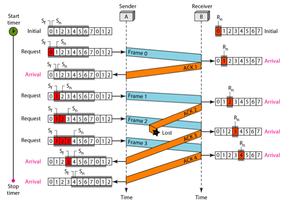
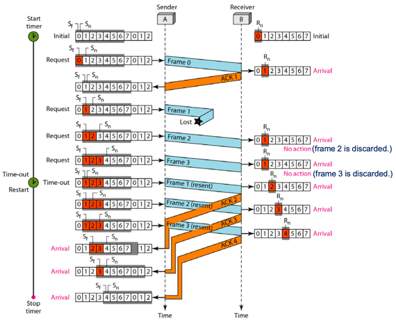
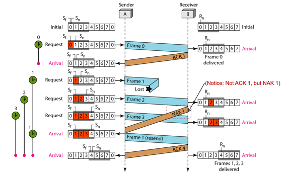
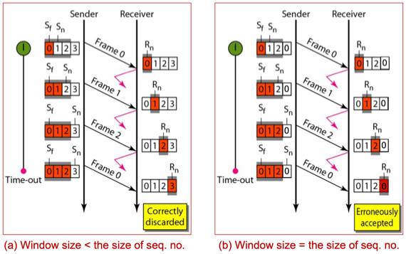
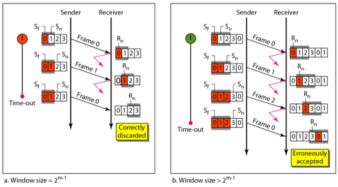
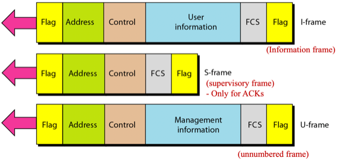
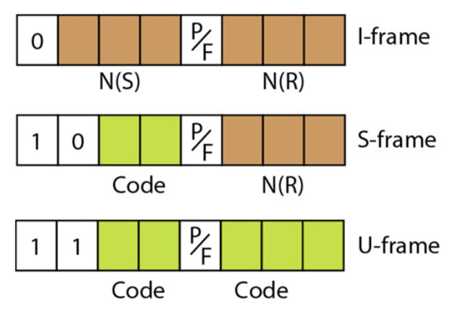
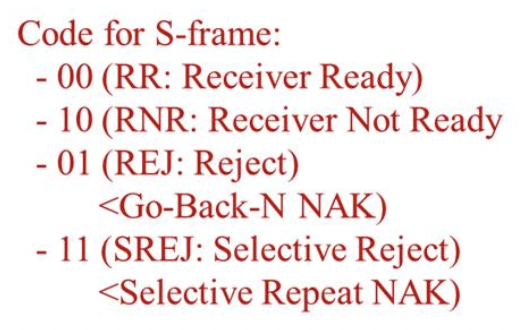

충남대학교 컴퓨터공학과 김상하 교수님의 "데이터 통신" 강의를 필기한 내용입니다.
다소 잘못된 내용과 구어적 표현 이 포함되어 있을 수 있습니다.
Stop - N - Wait ARQ의 단점
- 하나 받고 ack를 보내고 그 다음 또 하나를 보내고 하는 것에는 하나받고 ack를 보낸 다음에는 다음 프레임이 올 때까지 수신측에 놀게 된다는 비효율성이 존재함
- 이것을 해결하기 위해 한번에 하나의 프로레임을 보내는게 아닌 여러개의 프레임을 보내고, 이때에는 시간차를 적당히 주어서 바나의 프레임을 버퍼에서 지우기 전에는 다음 프레임이 들어오지 않게 하는 방식으로 해결할 수 있다
Go-Back-N ARQ
- 이 프로토콜의 핵심은 프레임을 연속적으로 보내다가 실패하면 실패한 시점으로 돌아가 다시 보낸다는 것이 핵심이다 - 그래서 이름이 Go Back인 것
- 프레임들을 연속해서 계속 보내므로 송신측은 내가 어디까지 냈는지를 기억할 필요가 있다. 따라서 프레임 하나를 보내고 그것을 Slide Window라는 메모리 버퍼에 저장한다.
통신과정
- 송신측의 기본적인 진행과정을 살펴보자
- 프레임을 보낼때마다 보낸 프레임을 Slide Window 버퍼에 저장하게 된다.
- 수신측으로부터 잘 받았다는 ack를 모두 받으면 이 버퍼에서 프레임을 전부 지운다
- ACK가 들어오지 않았다면 timeout걸릴때까지 잠시 기다렸다가
- 만약 ack가 보낸 프레임들에 대해 전부 들어오지 않으면 수신자가 아무것도 받지 못했다고 판단해 Slide Window에 있던 프레임들을 전부 다시 보낸다
- 만약 ack가 보낸 프레임들에 대해 일부만 들어오면 들어온 ack중에서 가장 ackNum이 높은 것부터 다시 보낸다
- 이 경우에는 두가지의 상황이 존재한다 - 먼저 0123을 보냈는데 012만 들어온 경우면 01까지는 갔지만 2부터는 안들어왔다는 소리이므로 2부터 다시 보내게 된다
- 만일 위와 동일하게 보냈을 때 02가 들어왔으면 1이 안들어왔다고 1부터 다시 보내는 것이 아니다 - 2가 들어왔으므로 1까지도 당연히 받았다고 판단하고 2부터 다시 보내게 된것이다
- 즉, ACK number는 “이거 이전까지는 전부 정상적으로 받았으니 이거나 내놓아라”라는 뜻이므로 중간에 ACK가 안들어온게 있어도 그것부터 재전송을 시작하지 않는다
- 이제 수신측의 기본적인 진행과정을 살펴보자.
- 프레임이 정상적으로 들어오면 ACK를 보낸다. 프레임이 연속해서 들어오므로 ACK도 수신 완료될때마다 연속해서 보내게 된다
- 만일 하나의 프레임이 수신 실패하게 되면 그 다음에 들어오는 프레임을 모두 폐기한다. 그리고 수신 실패한 순간부터 ACK를 보내지 않는다.
예시

- 우선 위의 예시는 ACK2가 중간에 유실됐지만 그럼에도 ACK3, 4가 수신됐기 때문에 송신자는 3번까지 다 받은것으로 판단해 Slide Window를 다 비우게 된다

- 위의 예시는 Frame 1이 유실되어 수신자는 이후 들어온 2와 3을 모두 폐기하고 ACK를 보내지 않는다. 따라서 timeout이 걸리고 송신자는 수신자가 아무것도 못받았다는 판단 하에 Frame 1부터 재전송한다.
특징
- 송신측의 slide window 는 Circular Queue를 사용하게 된다 - 즉, 차례대로 프레임들이 쌓여 있다가 송신을 한 후 이것들을 제대로 받았다는 ack를 받으면 제대로 받은 애들을지운 후 아직 안보내서(혹은 수신측이 받지 못해서) 보내야 할 프레임들을 앞으로 땡기는게 아닌 ACK를 받은 프레임이 있던 자리를 비우고 앞으로 더 보내야되지만 slide window에 자리가 없어서 들어오지 못했던 프레임들이 차례로 들어오게 되는 것
- 즉, 012345에서 012에 대한 ACK가 들어오면 345678이 되는게 아니라 678345이 된다는 소리이다
- Go-Bask-N ARQ의 경우에 수신측은 이전의 프로토콜과 동일하게 하나의 프레임만 저장할 버퍼밖에 가지고 있지 않다
- 중간에 수신누락이 생겨 폐기해도 정상적인 상황에 연속적으로 프레임이 수신되므로 stop-n-wait보다는 더 빠르게 작동하게 된다
- 그리고 저기 사진에는 안나오지만 수신측에서 해당 seqNum부터 다시 보내달라는 의미로 NAK 패킷을 보내기도 한다
Selective Repeat ARQ

- 앞의 프레임이 죽어 그 이후 정상적으로 수신된 놈도 폐기하는것이 너무 아까웠던지 그 뒤의 것도 저장하고 못받은 놈만 다시 보내라고 하는 방식이다
- 수신측에서 중간에 프레임이 빌 경우 ACK를 보내지 않고 NAK를 보내게 된다
- ack의 경우 내가 이전까지는 다 잘 받았고 이제 난 이게 필요하다 라는 뜻을 가지게 되는데
- 지금의 경우에는 지금 이게 안들어와서 이것만 다시 보내달라 라는 뜻을 가진 메세지가 필요하므로 ACK말고 NAK이라는 놈을 새로 고안하게 된 것이다
- 이제 수신측은 내가 어디까지 받았고 이제 어디를 받아야 하고 어디가 비었는지를 확인하기 위해 수신측도 Receive Window라는 버퍼를 필요로 한다
Piggybacking Go-Back-N ARQ
- 이제 얘는 양방향 통신을 위한 go-back-n arq이다
- 내가 쟤한테 프레임을 받고있고 나도 쟤한테 데이터를 보내야 하는 경우에는 그냥 ack를 데이터에 붙여서 같이 보내게 된다
- 만약 양방향 통신이 이루어지지 않고있다면 그냥 ack만 날리겠지만 양방향 통신이 시작되면 이제부터는 쟤나 나나 데이터에 수신 완료된 프레임에 대한 ACK를 붙여서 보내게 되는 것 - 이 piggybacking이라는 것을 항상 사용해야 된다는 것은 아니더라
버퍼에 저장되는 프레임의 갯수, seqNum 정하기
- 일단 여기서 알아야될 점은 seqNum은 무한한 숫자가 아니고 유한한 숫자이며 01230123이런식으로 순환되며 프레임에 할당되게 된다
- 따라서 seqNum가 너무 크다면 이 seqNum을 저장하기 위해 데이터에 포함되어야 할 비트의 수도 커질 것이고 그러면 배보다 배꼽이 더 커지는 상황이 생길 수도 있다 - 따라서 적당히 해야됨
- 일단 seqNum을 잘못 설정해 오류가 나는 경우는 Go-Back-N이나 Selective나 전부 정상수신했지만 ACK가 전부 유실되는 경우 송신자가 처음부터 다시 보낼때 수신자는 그것을 재전송된 프레임이라고 판단하지 않고 아직 안받은 프레임이라고 판단해 폐기하지 않고 받아들이는 경우이다
seqNum과 버퍼 사이즈의 관계 - Go-Back-N의 경우

- 버퍼 사이즈 < seqNum인 경우
- seq num이 2비트인 0, 1, 2, 3이고 버퍼에 저장되는 프레임의 갯수가 3개이며 0, 1, 2를 송신했다고 해보자.
- 이때 수신자는 0, 1, 2를 모두 정상수신했지만 전부 ack누락이 된 경우 송신측은 쟤가 암것도 받지 못했다고 판단해 0부터 다시 보내게 된다.
- 수신자는 0부터 다시 오니까 전부 폐기시키며 3번 프레임이 필요한 상황이므로 ack3을 날린다
- 만약 이게 성공적으로 송신측 귀에 들어가면 3번부터 보내게 되는 것이다. 따라서 오류 없이 전송이 되었다고 볼 수 있다
- 즉, 송신버퍼 사이즈 < seqNum인 경우에는 ACK가 전부 유실되어 송신자가 아무것도 못받았다고 판단해 다시 처음부터 보내도 수신자는 폐기시키므로 오류가 나지 않는다
- 버퍼사이즈 = seqNum인 경우 :
위와 동일하게 지금까지 보낸 프레임들이 다 수신되었지만 ack가 다 죽어버린 경우를 생각해보면
- 0, 1, 2, 3을 수신측은 다 수신해 이제 새로운 0번을 받아야 되는데 송신측은 ack가 하나도 들어오지 않으므로 보냈던 0번을 다시 보내게 된다.
- 이렇게 되면 수신 측은 이미 받았던 데이터인데 이것이 새로운 데이터라고 인식하지 않고 그대로 받게 되어 수신 오류가 생긴다.
- 따라서 Go-Back-N의 경우 송신버퍼 사이즈 = seqNum이면 ACK가 전부 누락된 경우에 수신자는 새로운 0번을 받아야되는데 송신자는 이전의 0번을 재전송하므로 통신 오류가 생긴다
seqNum과 버퍼 사이즈의 관계 - Selective Repeat의 경우

- 일단 위의 예제에서 m은 seqNum을 나타내는 비트의 수를 의미하는데 2^m가 결국에는 seqNum의 갯수와 같으므로 그냥 seqNum으로 표기합니다
- 송수신버퍼 사이즈 = seqNum / 2인 경우 - 예시 a
- 이번에도 ACK가 전부 유실된 경우를 봐야 된다. 프레임 0, 1이 수신되었지만 ACK가 모두 유실된 경우 송신자는 ACK가 들어오지 않았으므로 0을 다시 보낼 것이다.
- 하지만 수신자의 버퍼에는 0이 없기 때문에폐기하고 2를 요청한다 - 따라서 이 경우에는 정상적으로 작동한다.
- 즉, 송수신버퍼 사이즈 = seqNum / 2인 경우에는 ACK가 모두 유실돼도 송신자가 재전송한 프레임이 수신자의 버퍼에 없기 때문에 폐기하게 되어 정상작동한다
- 송수신버퍼 사이즈 > seqNum / 2인 경우 - 예시 b
- ACK가 모두 유실된 경우를 보면 송신측은 0, 1, 2를 모두 보냈고 수신측도 모두 받았지만 보낸 ACK가 전부 유실된 상황이다.
- 이때 송신측은 당연히 ACK가 들어오지 않았으므로 0번부터 다시 보내게 되지만 수신측 버퍼에는 다음 0번이 대기상태이기 때문에 3번을 비워두고 재전송한 0번을 다음의 0번이라고 판단해 넣게 된다 - 수신 오류가 나는 것
- 즉, 송수신버퍼 사이즈 > seqNum / 2의 경우에는 ACK가 모두 유실됐을 때 송신자가 재전송한 프레임이 수신자의 버퍼에 다음 대기 프레임으로 채워지기 때문에 수신오류가 난다
High-level Data Link Control(HDLC)
- 지금까지 배운 것들로 만든 실제 통신 프로토콜
통신의 방향성
- Normal response mode : 단방향 통신. 한쪽이 데이터를 보내면 한쪽에서 받는(받는쪽이 항상 같은놈이면 point-to-point, 다를수도 있으면 multipoint라고 한다) 구조
- Asynchronous balanced mode : 양방향 통신을 의미함
- 다만 여기서 통신의 방향성이라는 것은 통신을 먼저 시작할 수 있는 놈이 한쪽이냐 아니면 양쪽이냐에 따라 나눈 것
패킷의 종류

- I-frame : 데이터를 보내는 프레임, S-frame : ACK, U-frame : 통신 모드 변경 등의 관리 패킷이다
- FLAG는 시작과 끝을 알리는 부분
- ADDRESS는 송수신주소를 명시하는 부분
- CONTROL은 패킷의 종류를 구분하는 부분
- FCS는 FLOW CONTROL, 즉, 오류검출용 bit들이 내장된 부분이다
Control 헤더의 구성

- 일단 컨트롤이 0으로 시작하면 I-frame, 10이면 S-frame, 11이면 U-frame로 판단한다
- N은 seqNum을 의미한다. 그리고 S는 Sender, R은 Receiver를 의미한다.
- 따라서 N(S) 는 자신이 보내는 데이터의 seqNum인 것이고
- N(R) 는 자신이 받은 데이터에 대한 ACK이다
- 둘 다 데이터를 보내는 경우 - Piggybacking인 경우
- 데이터에 양측의 ack가 붙게 되는데 이때
- I-frame의 N(S)와 N(R)를 모두 사용해서 자신이 보내고 있는 데이터에 대한 seqNum과 자신이 받은 데이터에 대한 ACK를 보내는 거다
- 한쪽만 데이터를 보내고 한쪽은 그냥 듣는 경우
- 송신자는 데이터랑 ACK랑 같이 보낼 필요가 없으니까 I-frame에서 N(R)는 필요가 없으므로 N(S)만 사용하게 된다
- 그리고 마찬가지로 수신자는 ack만 날려야 되기 때문에 이때 S-frame을 사용하는 것
- I-frame의 code부분은 이 사진을 봐라

- 00일 경우에는 송신 속도 양호. 앞으로도 계속 이 속도로 보내면 된다는 뜻이고
- 10은 너무 빨리 보내 데이터 덮어쓰기가 발생할때이다. 속도를 좀 줄여달라는 의미
- 01은 GBN에서의 NAK로 쓰인다. 해당 seqNum부터 다시 보내달라는 뜻
- 11은 SR에서의 NAK이다. 해당 seqNum만 다시 보내달라는 뜻
- U-frame의 code 부분은 통신 모드 변경, 확인 등의 목적으로 쓰인다. 뭐 현재 모드에서 Normal response mode라던지, Asynchronous balance mode 등등의 모드로 전환(SABM)하자 혹은 ㅇㅋ알았다(UA) 등의 확인 메세지 이런 용도로 쓰인다